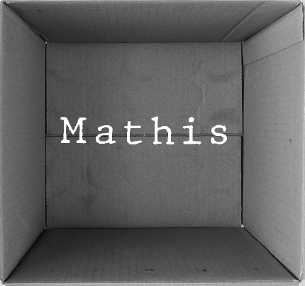
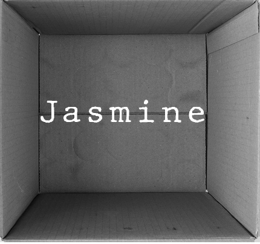
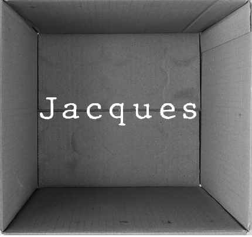

Découvrez les différents univers des chats selon la perspective de l'une des trois personnes suivantes. Veuillez choisir parmi l'une des boîtes ci-dessous
L'expérience en direct, c'est ici que ça se passe!